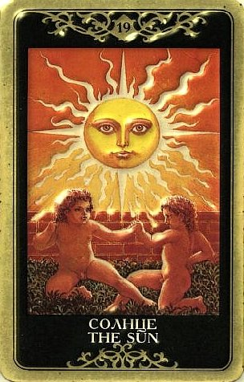

Солнце нацеливает людей на исключительность и символизирует самые положительные качества: жизненную энергию, яркость, неординарность, достоинство, индивидуальность. Люди Солнца – лидеры по натуре, мощные авторитетные личности, никогда не остающиеся в тени. Это активное мужское начало, стремление к власти, самосовершенствование, гордость, щедрость, творческая сила, оптимизм, исключительность, самоотдача, инициатива и личная ответственность. Негативные влияния Солнца – эгоизм, себялюбие, своеволие, тщеславие, властолюбие, помпезность, напыщенность, деспотизм, самодурство.
Это самый расцвет жизни, счастье бытия, ощутимый успех. Человек получит от жизни какой-то существенный дар, которому сможет просто радоваться.
По Солнцу человек может получить подарки сверх заслуженного и ожидаемого, которых, возможно, не считал себя достойным. Эти дары надо просто принять и насладиться ими, не задавая вопросов, не подвергая сомнению, не пытаясь понять их действительный смысл.

Достижение цели.
Праздник по поводу свершения чего-либо важного.
Солнце дает возможность насладиться и тем, что было достигнуто и получено по праву, и тем, что было даровано безвозмездно (хотя это не означает кармически незаслуженно).
Солнце - это новые перспективы бытия, открывшиеся перед человеком после сна Аркана Луна, когда у него есть желание и силы непосредственно включиться в жизнь мира во всей ее полноте, освободившись от иллюзий, страхов и сомнений.
Жизнь поворачивается к вопрошающему своей солнечной стороной, начинается светлая и удачная полоса, период активности, успеха и счастья.
Без сомнения, Солнце – одна из самых лучших карт в колоде. При ответе практически на любой вопрос она дает благоприятный ответ, означает достижение чего-либо важного, долгожданное исполнение желаний.
При раскладе на ситуацию Солнце предвещает на редкость спокойное и удачное ее разрешение.
Планы непременно осуществятся, хотя, возможно, и не так скоро, как хотелось бы.
Тем не менее общий исход ситуации окажется на редкость удачным, и вскоре забудется, что пришлось какое-то время подождать исполнения надежд.
Этот Аркан показывает отсутствие тьмы в каком-то вопросе, а это большая редкость.
В узкопрактическом смысле – поездка в теплые страны, отдых.
ЛИЧНЫЕ ОТНОШЕНИЯ
Солнце – очень благоприятная карта в сфере личных отношений, и в значении «счастье», и в значении «примирение».
Солнце несет также весть о том, что вопрошающий с любовью примет, наконец, своего партнера таким, какой он есть, не пытаясь как-то изменить его природу и исправить его недостатки, и может рассчитывать на такое же безусловное принятие с его стороны.
Если ситуация напряженная - сложности разрешатся, суть проблемы станет ясна, в ее решении будут проявлены лучшие человеческие качества, люди станут ближе друг другу, все станет проще и понятнее.
Карта говорит о реальной возможности по-настоящему помириться, преодолеть противоречия, забыть ссоры и размолвки.
Даже если все мосты сожжены и восстановить отношения уже невозможно, карта все же указывает на «потепление» и доверие.
Открытость и гармония во взаимодействии между двумя людьми.
Согласие и тепло в отношениях, наслаждение взаимной любовью, сексуальное удовлетворение.
Истинное понимание, радость и счастье.
Партнеры балуют друг друга вниманием и нежностью, получая ласку и любовь в ответ, вместе радуясь жизни и ощущая себя единым целым.
Это карта доверия и доброты, верности и преданности.
Прочный защищенный союз, очень крепкая связь.
Искреннее и бескорыстное чувство, щедрость, великодушие и готовность больше давать, чем брать, радость самоотдачи любимому человеку, умение дарить себя, нисколько себя не теряя.
Ощущение личной востребованности, важности для партнера, своей огромной ценности и желанности.
Солнце описывает хорошего партнера, мужественного, энергичного, творческого и порядочного.
Тем, кто еще не встретил свою половину, оно сообщает, что эта половина будет лучшей!
Солнце уверенно предвещает новые отношения, большую любовь, появление близкого человека, который окажет большое влияние на жизнь вопрошающего.
Совет Солнца - быть чьим-то «солнцем»!
Не скупясь согревать теплом своего сердца, радовать приветливостью и лаской, наполнять положительной энергией, помочь другому человеку уверовать, что жизнь прекрасна, «даже когда трудна и когда опасна».
Утешать, одобрять, любить и поддерживать.
Солнце считается сигнификатором судьбоносной встречи, признания в любви, помолвки, свадьбы, успешного брака.
Эта карта предсказывает радостное объединение (брак), счастливую супружескую жизнь и (или) скорое рождение ребенка.
Алхимически она имеет отношение в гармонии мужского и женского начал.
Это их танец и правильное притяжение – подходящие партнеры найдут друг друга.
Солнце – символ освобожденного партнерства, когда все энергии доступны для творческих процессов и не тратятся на борьбу с чем-то и за что-то.
Приобретенная свобода выражается в состоянии радости, в котором может произойти настоящая алхимическая трансформация обоих душ.
Радость по поводу успехов детей, вообще благополучие детей.